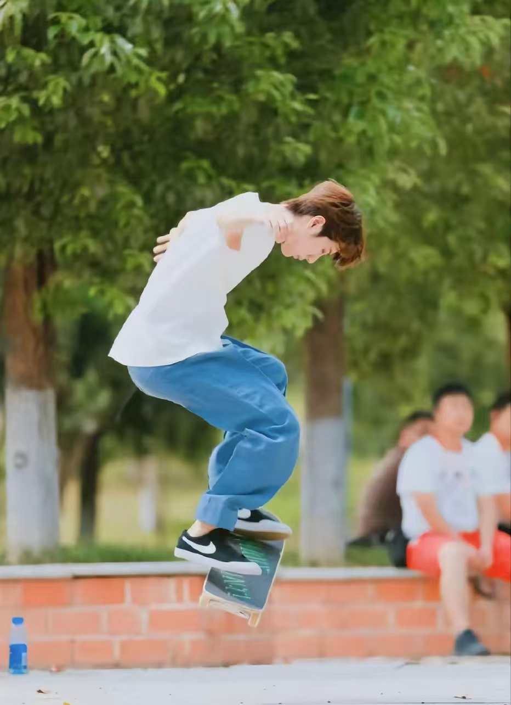
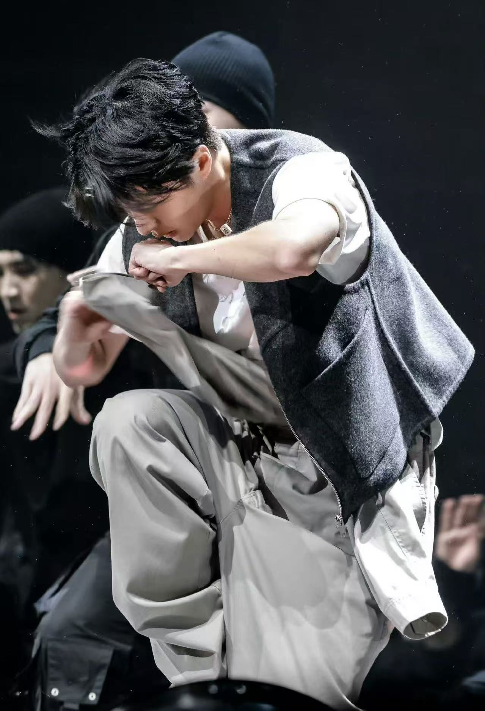
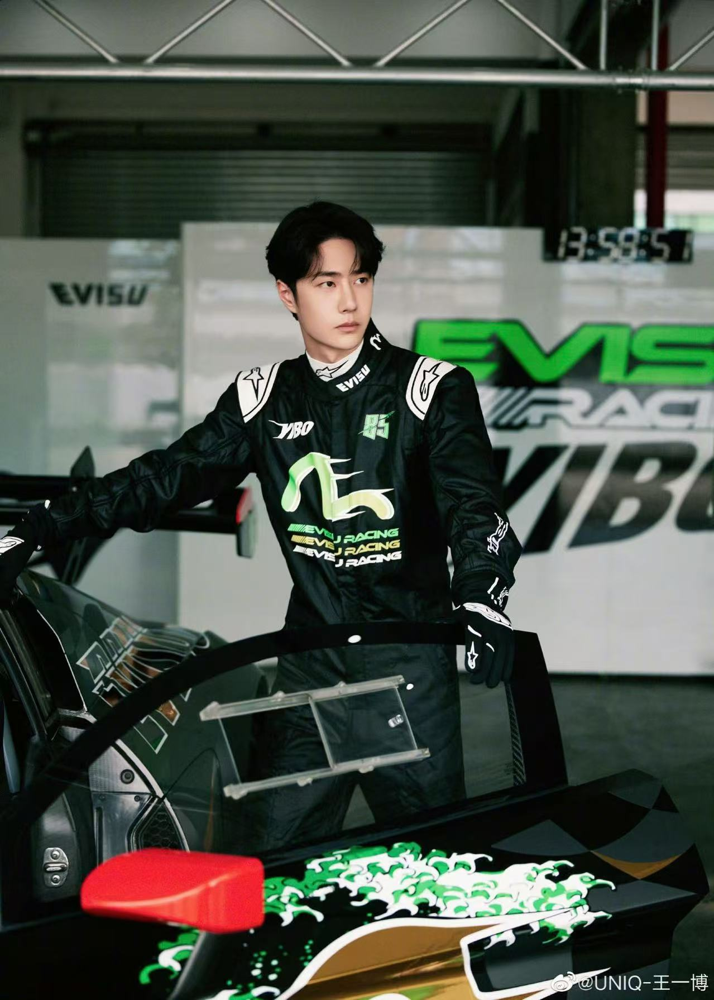
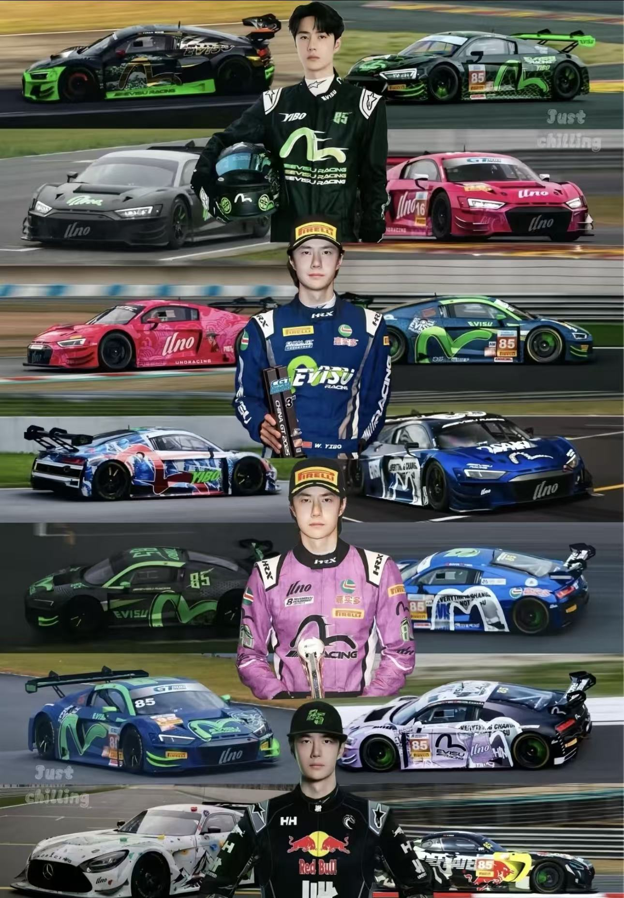
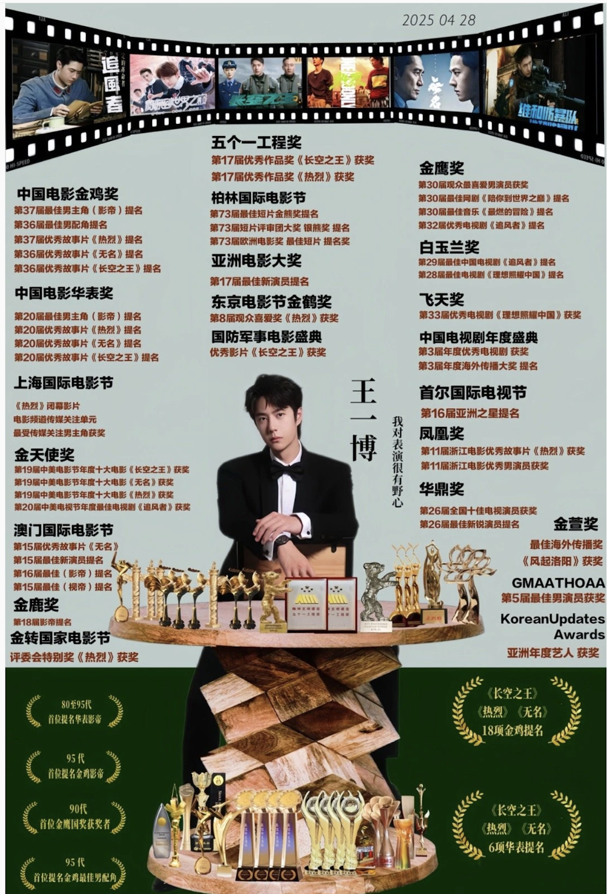
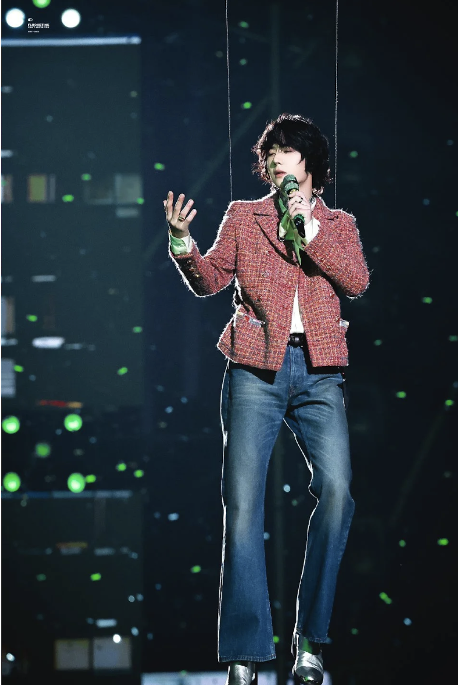
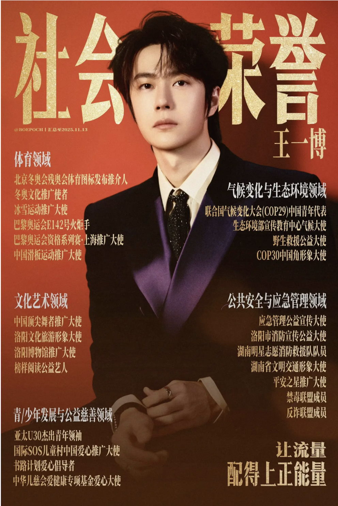

Wang Yibo, born in Luoyang, Henan in 1997, is an all-round artist who shines in many fields of performing arts. He debuted as a member of the UNIQ group in 2014, and his singing and dancing skills began to shine. Since then, he has won the love of the audience with his performance as a host of "Day Day Up", and has shined as a mentor in variety shows such as "Produce 101" with his solid dance skills. In the film and television industry, he has created many unforgettable characters, from the cold and elegant Lan Wangji in "The Untamed" to the passionate Chen Shuo in "Hot". He has made outstanding achievements in music and film and television, with record-breaking single sales and multiple award nominations for his works. On the field, he is also a professional motorcycle racer, bravely chasing the wind. Wang Yibo uses his strength and hard work to interpret his passion in different fields and constantly break through himself.
Personal Hobbies
Skateboard
Hip-hop
Rock climbing
Racing



Awards
Racing Awards

Wang Yibo is a professional motorcycle racer and has achieved impressive results in racing competitions. He has participated in national and regional motorcycle racing events and has won awards and recognition for his performance. His passion for racing and his courage on the track show another side of his personality. Racing awards highlight his determination, discipline, and willingness to challenge himself. This makes him not only an artist but also a sportsman with strong competitive spirit.
Acting Awards

Wang Yibo has achieved great success in acting and has received several important awards and nominations in the film and television industry. His performances in popular dramas have been widely recognized by both audiences and professionals. He has been honored with awards such as the Golden Eagle Awards and other television and film awards, showing his strong acting ability and continuous improvement. From calm and reserved roles to passionate and energetic characters, he has demonstrated a wide acting range. These acting awards not only prove his talent but also show his dedication and hard work in the entertainment industry.
Music and Dance Awards

Wang Yibo has achieved great success in both music and dance, earning recognition for his strong stage performance and artistic talent. As a member of UNIQ, he started his career with excellent singing and dancing skills, and later continued to grow as a solo artist. His music focuses on hip-hop and dance styles, showing energy, rhythm, and creativity. In addition, his professional dance ability has made him stand out in many performances and variety shows, where he has even served as a dance mentor. His achievements in music and dance reflect his dedication, versatility, and passion for performance.
Social Honors

Wang Yibo has received many social honors that recognize his influence and positive impact on society. These honors are not only based on popularity but also on his public image, responsibility, and contribution as a public figure. He has been invited to important events and recognized as an influential young artist through major platforms such as Weibo Night and other official ceremonies. His professionalism, discipline, and dedication have helped him build a strong and positive reputation. These social honors reflect his role as a role model and show that he is respected not only as an entertainer but also as a responsible member of society.